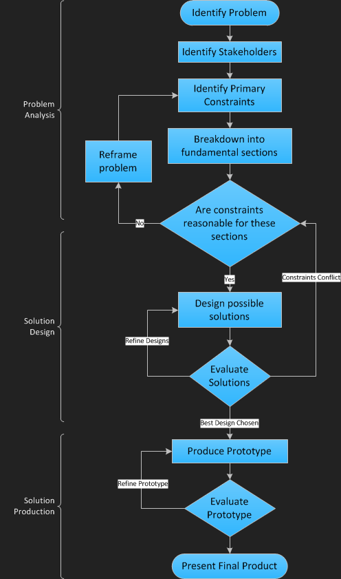

This is Daniel Gen Li. If you are a frequent visitor of Java indie-game development forums, you might know me better as the user facultyofmusic. No spaces. (or if you are Ante, Dotty.)
This is my Engineering Design Portfolio. Here you can find out more about me, take a look at my past and current projects, and perhaps share a few common thoughts in my wild dreams of a brighter future.
I’ve enjoyed the majority of my teenage life immersed in academics. I’m a learner, and that’s what I will always want to be. Four years of high school has taught me to be critical of myself. I’ve worked on many projects. Some are robots, some are physics simulations for my high school teachers, and some are videogames which I love making just as much as playing. These projects created the modern me: a proud engineer. They’ve taught me much about the world, but most importantly, they’ve taught me how to learn.
I’m currently studying in the Engineering Science program of The University of Toronto; on my way to become a top-notch engineer. I’ve designed and made bridges, created websites, designed innovative solutions to resolving RSIs, and much more. Through these projects I’ve learned importance of “Engineering Design”. Every project needs to be carefully designed for them to be successful. This portfolio will give you a detailed review of my design process, my engineering philosophies, and my set of core values.
I see myself in a few years as an elite software developer, and that is where I will strive toward. I look forward to extending my skills set in the field of software development, design, optimization, and large server infrastructures, and I will continue to work on my ideas and present them to the world. Below you'll find what I've alraedy done to my existing ideas, how I gave life to them, and in some: the hard lessons I learned from them. This is what I call my Engineering Design Philosophy. Within the paragraphs you'll find links to my projects. Feel free to visit these artifacts, as they will provide you with the context you need to better understand my philosophy. Happy Reading!
With more than 5 years of programming experience and a wealth of skills and projects down my arsenal, I don't hesitate to call myself a semi-pro software developer. My current focus is on videogames for mobile platforms, and I'm loving every bit of it. I'm a deep thinker, clever designer, and a fast learner. I'm a programmer, a designer, a hobby musician, and a nerd who loves the nitty gridy of every Starcraft tournament and strategies.
A wild idea outside the box is never at the end of my potential;
It's only the beginning.
|
The process of engineering design can be broken down into three main sections.
The problem analysis process is perhaps the most vital part of a project's success. Identifying the problem's core constraints and it's stakeholders will give and lead a project to a clear purpose. A clear purpose is one of the central requirements for good engineering design, for only when there is a will, there's a way. The importance of the problem analysis stage maybe demonstrated by the Apartment Security RFP project. This project's main purpose was to educate students processes involved in constructing a proper problem statement. During this project, we made frequent contacts and visits to stakeholders and conducted through research to obtain confirmation of the legitimency of the problem. This helped us understand the importance of obtaining a well refined problem, and the skills needed to do so. A clear purpose and clearly identifying it's requirements and stakeholders will help to break down the problem into smaller, more fundamental segments. Problem break down not only allows the project to be easily organized, removes over complication, and allows us to focus on specific aspects of the project. This aspect of the design process is throughly demonstrated through the RSI Prevention Project. During the analysis stage of this project, we broke the problem down to many stages, and attempted many solutions to them individually. The result of this project was two solutions combined in one, which effectively resolves the problem of RSIs occuring in librarians. During the design stage, we were plagued with contradicting conditions that one solution could only solve one problem, or it created more problem to be solved. Breaking the problem down allowed us to tackle the problem in a well organized and broken down manner. After the problem has been broken down, the team needs to evaluate the constraints imposed by the design requirements. Unrealistic constraints will cause the creative design process to be frustrating and block out many feasible solutions. They limit the project to impossible or unrealistic solutions and will need to be pushed back. If unrealistic retraints are founds, the problem proposed will need to be reframed and compromised to allow more reasonable criterias; an example of such constraints is the UKEN Hackathon Challenge. This project had the greatest and most deadly constraint: Time. The entire project was to be started and finished within 24 hours. This posed a great threat to the team, especially because it's a videogame hackathon. Videogames require through planning and carefully written and reviewed iterations of code. However, within 24 hours, this was not very possible. As a videogame developer, the time contraint translates to several others constraints:
Only by working with these well defined constraints constantly on our minds were we able to finish a full-fledged dungeon crawler game within the short span of 24 hours. The game was simple. Designed to be easily implemented. The game was also designed in such a manner that did not require exquisite artwork. If we violated any of these key constraints, our game could not be completed in time, and we would have failed to fullfill the master constraint: Time. With a well selected set of criterias and constraints clearly listed out with the purpose of the design project, we now enter the Solution Design phase. The first step in designing for possible solutions is the creative designing process. The problem should be viewed and discussed from many view-points. Cognitive Anchors should be avoided to prevent members of the team from limiting their own thoughts. Solutions are then evaluated with consideration to the level reaching the requirements, inventments needed, and ease of solution implementation. A good practice is to evaluate solutions, find loop-holes and faults in solutions, and then go back to the creative design phase to refine the solutions until a suitable ones can be chosen. Some conflicts say appear during this process that were not thought of during the constraint evaluation process. It is necessary to always consider the fundamental purpose of the project and it's key constraints, and push back when necessary. This solution evaluation stage was utmost important during the Popsicle Bridge Project my team tackled in grade 11. In this project, the team must support a very heavy centered load with a self-constructed popsicle and carpenter-glue bridge that spans just less than a meter and must weigh no more than 190grams. A good design is vital. Only a well chosen design will be able to withstand the loads with efficiency. The team evaluated through many types of bridges. With different truss designs, arches, straight braces, etc. The force calculations were done for each type to show statistically the optimal design. Through careful selection and refinement of the design, we have concluded with the design of a lenticular pratt-truss. With this design, our team achieved a high ranking of second place in the competition, a 100% on the project evaluation, and an astounding strength to mass ratio of 3600. Prototyping begins the final phase of the engineering design process. Prototypes are physical demonstrations of the most potimal solution chosen in the previous phase. During the process of implementation many problems will occur. Again, the process of evaluation and refinement come at no surprise. The final result of the refinement of the most optimal design will become the final product. The Box-Girder Bridge Project of CIV102 is a perfect example of the importance of prototyping. The majority of this project can be said to be the prototyping phase. Having a good design will not win the competition, one must create a realization of the design that accurately demonstrates the strengths and perks of the design. The bridge was careully constructed with great quality and assurance. It ended up well within the "Kilonewton Club", but suffered it's defeat in the left side supporting section. It's shown to us here that a prototype must be well rounded. One single weakness may cause the entire project to collapse, or at least not meet it's proposed abilities. This concludes my personal engineering design philosophy. However, there is one more thing that must be mentioned. That is: design at it's best must be based off of a wealthy set of experiences. That is why handbooks exist. I've had the honor of creating my own Civil Engineering Handbook during the CIV102 course of first term EngSci. This handbook has accompanied through out the final projects of civil engineering, and from it's existence I realized the importance of these handbooks. There is only so much genius a man can have, the other credits for a good design goes to these human experiences collected in hundreds and thousands of pages of history. As I grow and strive for the top, my experience will accumulate. There is one handbook that I wish to be a part of one day, for the future generations. The Handbook of Engineering Design.
|
 |